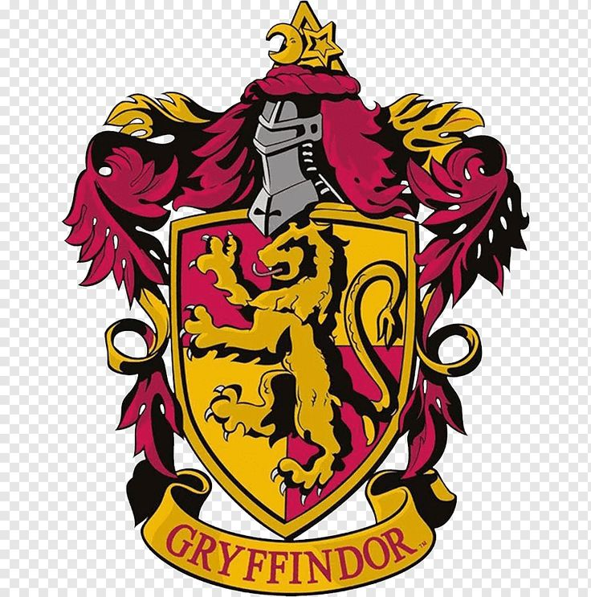
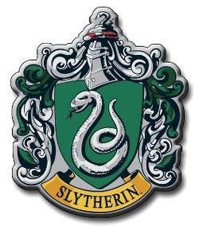

Nosso primeiro dia de aula. Eu e meus amigos ficamos muito felizes por finalmente ter realizado nosso sonho de infância. Logo que chegamos, fomos direto ao refeitório, então, foi apresentado a nós, as seguintes casas.
Grifinória
A Grifinória é a casa dos corações ardentes, onde a bravura não é apenas uma escolha, mas a própria força que guia cada passo. Seus membros caminham pelo mundo com uma postura altiva, movidos por um senso de justiça que pulsa forte no peito. Eu pude ver de perto como é viver entre os grifinórios, já que meu castelo é cheio deles.

Sonserina
A Sonserina é a casa dos que olham para o horizonte e enxergam o próprio destino, movidos por uma ambição silenciosa e uma determinação implacável. Seus membros não esperam que as oportunidades caiam do céu; eles planejam, calculam e moldam a realidade para alcançar seus objetivos. Há nos sonserinos um pragmatismo afiado e uma inteligência estratégica que os faz valorizar o poder, a liderança e, acima de tudo, a autopreservação. Diferente do heroísmo impulsivo, o sonserino prefere a cautela, pesando cada risco e escolhendo as batalhas que realmente valem a pena vencer.

Lufa-Lufa
A Lufa-Lufa é a casa dos corações generosos, onde a verdadeira grandeza não é medida pela busca de glória ou poder, mas pela pureza das ações cotidianas. Seus membros caminham pelo mundo com uma paciência serena e uma disposição genuína para o trabalho árduo, acreditando que o esforço honesto constrói o caráter. Há nos lufanos uma lealdade inabalável e um senso de justiça universal que não faz distinção de sangue, talento ou origem; para eles, todos merecem respeito e um lugar à mesa. São a base sólida de Hogwarts, movidos por uma empatia profunda, pela gentileza e pelo desejo sincero de harmonia.

Corvinal
A Corvinal é a casa das mentes inquietas, onde o conhecimento não é apenas uma ferramenta, mas o próprio ar que se respira. Seus membros caminham pelo mundo movidos por uma curiosidade insaciável e pelo amor profundo pela sabedoria, pela lógica e pelo mistério. Há nos corvinais uma inteligência aguçada que se recusa a aceitar respostas fáceis; eles questionam, analisam e buscam a verdade em cada detalhe. Mais do que intelectuais, são almas criativas, excêntricas e originais, que valorizam a liberdade de pensar fora dos padrões e celebram a individualidade de cada mente.

Dia 2ja familiarizados com o local, foi feito s sorteio para ver em qual casa cada um pertenceria durante o tempo de estadia. Eu já havia estudado sobre tudo, e acabei gostando da lufa-lufa. E por incrivél que pareça foi a que mais me encaixei. Junto dos meus amigos.